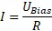

|
理论
|
当与样品表面保持恒定的物理接触时，这使得电流能够在探针和样品之间流动，从而提供有关样品局部电阻率或电导率的额外信息。但不应将其与扫描隧道显微镜中的隧道电流混淆，后者中该电流也作为反馈信号。
施加偏压 U偏压 后，根据欧姆定律，可以测量在探针和样品之间流动的电流 I：

这里的电阻涉及整个系统，而不仅仅是直接的样品表面，包括样品支架及其电连接以及悬臂梁。此外，测量的电流高度依赖于探针和样品之间的接触面积。由于探针的微观结构变化以及样品形貌的变化，它可能有所不同。
另一个障碍是表面的钝化。金属在环境条件下会迅速氧化，此外，大多数表面具有由湿度和周围空气其他残留物组成的吸附层。这些作为绝缘层，需要穿透才能形成电连接。
这对探针提出了很高的要求，探针需要导电并且在机械力作用下保持稳定。金属涂层和金属探针比硅更具延展性，通常磨损非常快。通常使用金刚石涂层的探针。
这种方法也与扫描扩展电阻显微镜（SSRM）相关，SSRM在能够穿透氧化层的力下操作。
更多信息